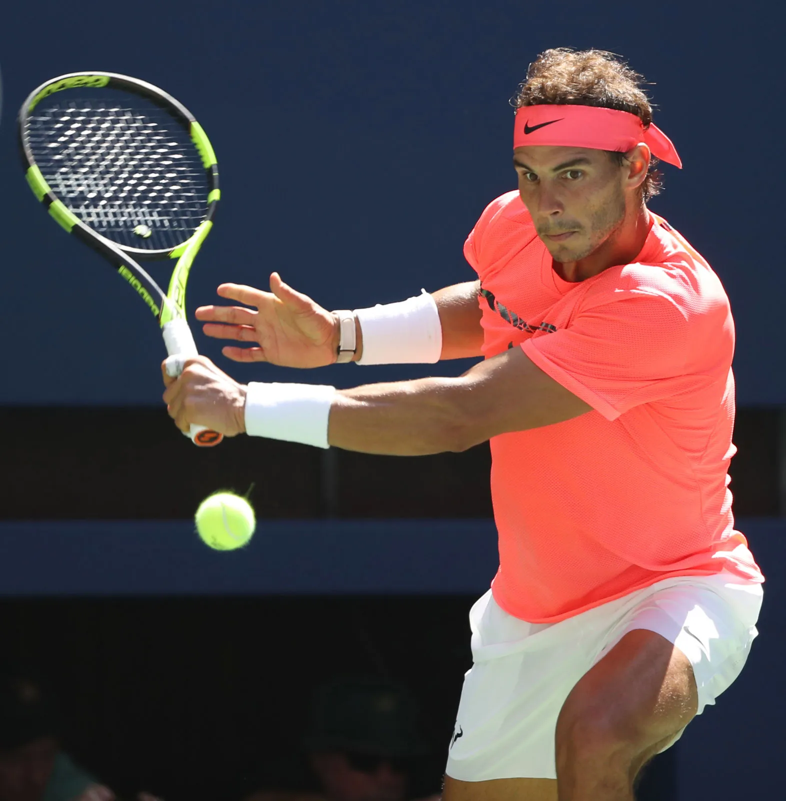

 ¡Bienvenidos a la biografía de Rafael Nadal! Este sitio está dedicado a celebrar la extraordinaria carrera de uno de los más grandes tenistas de todos los tiempos. Acompáñanos a explorar la vida y logros de Rafa, desde sus humildes comienzos en Mallorca hasta su dominio en las canchas de tenis alrededor del mundo. Descubre sus victorias históricas, su pasión por el deporte y su impacto dentro y fuera de la cancha. Prepárate para inspirarte con la historia de un verdadero campeón. Rafael Nadal es un ejemplo de perseverancia, esfuerzo y dedicación, tanto en el deporte como en su vida personal. Con múltiples títulos de Grand Slam y una carrera llena de momentos emocionantes, Nadal ha dejado una marca indeleble en el mundo del tenis. Además de su impresionante carrera deportiva, Rafael es conocido por su humildad y carisma, ganándose el respeto y admiración de fanáticos y compañeros por igual. Este sitio web busca ser un homenaje a su trayectoria, recogiendo los momentos más destacados y ofreciendo un vistazo a su vida más allá del tenis. ¡Esperamos que disfrutes explorando esta página tanto como nosotros disfrutamos creándola!